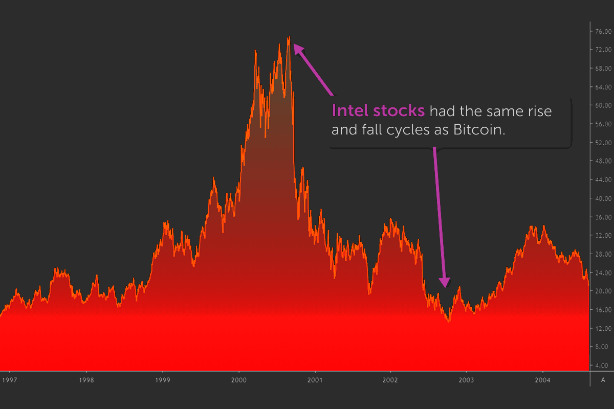
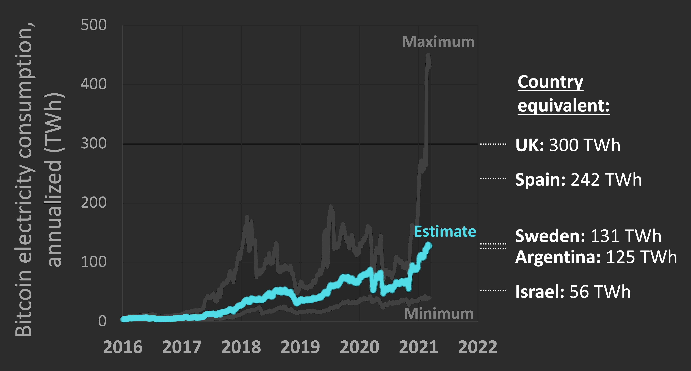

Le Future du Bitcoin
-
L'avenir de Bitcoin semble prometteur, mais son destin ultime en tant que monnaie pourrait dépendre de plusieurs facteurs. La volatilité de Bitcoin est bien connue, mais pour que l'adoption par le grand public soit finalement réalisée, elle doit se débarrasser de cette réputation. Les commerçants seront toujours réticents à accepter comme mode de paiement s'il y a de fortes chances que sa valeur diminue peu de temps après. Alternativement, les optimistes du prix Bitcoin ne voudront pas s'en séparer si pour des articles banals du quotidien, ils voudront s'y accrocher à la place.
Le Bitcoin est une bulle sur le point d'éclater.
-
Définition d'une bulle spéculative :
-
Mouvement haussier sur une longue période, à la pente de plus en plus verticale, qui se termine par un violent décrochage et un retour à la case départ ; Le prix d’un actif financier ne reflète pas ses fondamentaux immédiats ; Le prix d’un actif financier ne reflète pas ses fondamentaux futurs ; Des facteurs récurrents sous-jacents : taux d’intérêt bas, fortes liquidités, accès facile à la dette de marge (effet de levier).
-
Le prix d’un actif financier ne reflète pas ses fondamentaux immédiats ;
-
Le prix d’un actif financier ne reflète pas ses fondamentaux futurs ;
-
Des facteurs récurrents sous-jacents : taux d’intérêt bas, fortes liquidités, accès facile à la dette de marge (effet de levier).
-
Mais cette technologie est volatile
-
La vérité sur le bitcoin est simple; il connaît les mêmes cycles de hausse et de baisse que toutes les nouvelles technologies et classes d'actifs.

Une Technologie qui impacte le climat
-
Le processus consistant à essayer de trouver le bon nonce qui générera le hachage cible est essentiellement des essais et des erreurs – à la manière d'un voleur essayant des mots de passe aléatoires pour pirater le vôtre – et peut prendre des milliards d'essais.

Avec des centaines de milliers d'ordinateurs ou plus produisant des suppositions, on pense que Bitcoin consomme 707 kwH par transaction.
De plus,les ordinateurs consomment de l'énergie supplémentaire car ils génèrent de la chaleur et doivent être maintenus au frais.
Et puisqu'il est impossible de savoir exactement combien d'électricité le Bitcoin utilise parce que les ordinateurs et systèmes de refroidissement ont des niveaux variables d'utilisation énergétique, une analyse de l'Université de Cambridge a estimé que l'exploitation minière de bitcoin consomme 121,36 térawattheures par an.
C'est plus que ce que la consommation de toute l'Argentine, ou plus que la consommation de Google, Apple, Facebook et Microsoft réunis.Et cela ne fait qu'empirer parce que les mineurs doivent continuellement augmenter leur puissance de calcul pour rivaliser avec d'autres mineurs. De plus, parce que les récompenses sont continuellement réduites de moitié, pour que l'exploitation minière en vaille financièrement la peine, les mineurs doivent traiter plus de transactions ou réduire la quantité d'électricité qu'ils utilisent. En conséquence, les mineurs doivent rechercher l'électricité la moins chère et passer à des ordinateurs plus rapides et plus énergivores. Entre 2015 et mars 2021, la consommation d'énergie de Bitcoin a presque été multipliée par 62. Selon l'Université de Cambridge, seulement 39% de cette énergie provient de sources renouvelables, et c'est principalement de l'hydroélectricité, ce qui peut avoir des impacts néfastes sur les écosystèmes et la biodiversité.